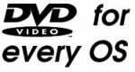

<= Back to the main indexIf you bought a DVD and want to play it on your Linux of FreeBSD machine, you'll have a hard time finding software to do it. No large companies seem to be interested of marketing such a product. Well, what about open source developments then? There is being worked on, but it's difficult.
Movies recorded on DVD's are encrypted by the so-called Content Scrambling System (CSS). This is done only to prevent legal owners of a copy to prevent making a backup copy and to prevent making anyone who doesn't pay the designers a large sum of money to make a DVD player. It won't stop large pirates anyway, a DVD can still be copied bit-wise. Eric S. Raymond, a well-known open source advocate, wrote about this (see http://www.opendvd.org/esr.html for the full article):
[...]
The DVDCA's real issue isn't protection of the market for DVD films, it's control of the market for DVD *players*."
The code to decrypt DVD's can be obtained, but you have to pay a large license fee and sign a non-disclosure agreement. This effectively prevented any development of Linux players.
One of the reasons it is so weak is the problems the US government makes about the export of strong encryption. For once these stupid export laws have worked in the advantage of the public.
But even if the algorithm was strong, it would stil have been broken sooner or later. Bruce Schneier, a well-known expert in the field of cryptography and author of the standard work "Applied Cryptography", wrote about this:
And so is the decryption key. The computer has to decrypt the DVD. The decryption key has to be in the computer. So the decryption key is available, in the clear, to anyone who knows where to look. It's protected by an unlock key, but the reader has to unlock it."
See the full story that appeared in Crypto-Gram, his periodic newsletter about encryption issues.
For music DVD's, the industry is now developing an "improved" algorithm. It won't work. It will be broken too, probably sooner than later.
I have a A local copy of the libdvdcss source available.
There are also free tools to save a DVD movie as an unencrypted .vob file to your harddisk (quite a bit of free harddisk space is needed of course. A linux version (source code, for 2.2 kernels it requires also a kernel patch to work), and a windows version (both binary and source) are available.
This player has also another big advantage (except for running under Linux instead of windows): it ignores the region codes the entertainment industry uses to prevent free trade between the continents. Normally, a DVD from the US can not be played in Europe and vice versa unless you hack your DVD player. So the entertainment industry can make extra profits by selling it under different conditions:
To counter this ``competitive threat'' (what? a company can't even compete with itself?!) the movie industry came up with the idea of encrypting the DVDs and adding a ``region code''. DVD players would be locked to one region (1 for America, 2 for Europe, etc.) and would not be able to play other DVD movies. That way they could continue to:
This strategy is now circumvented. However, the reaction of the copyright maffia (which includes the entertainment industry) has turned into what was to be expected...
This sort of actions usually work counterproductive on the internet: scientology is beginning to learn that you can't sue criticism away, now it is time for other copyright maffia bosses to learn this lesson. That's the reason I made this webpage and placed it here.
The DVD hardware sellers can be thankfull for this hack, it increases their market. Personally, I didn't want to buy a DVD player until this region code nonsense and the encryption stuff was solved. The same will hold for future blue-ray or HDDVD players. I want to be able to use the data I buy the way I like, not the way some marketing bozo wants me to.
Johan Wevers